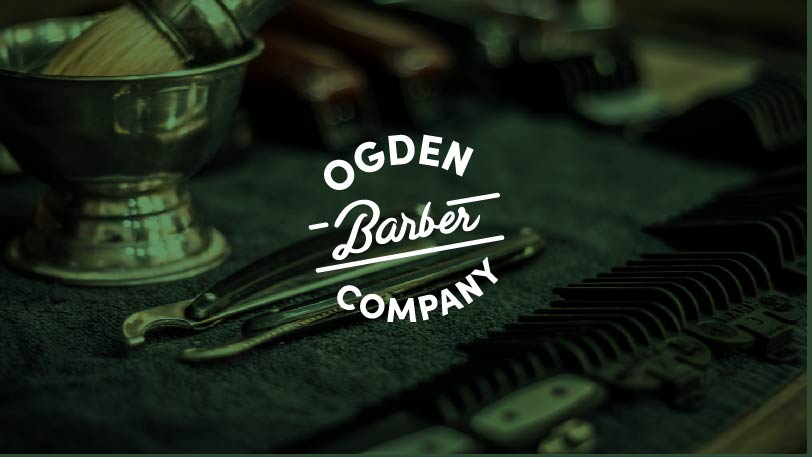
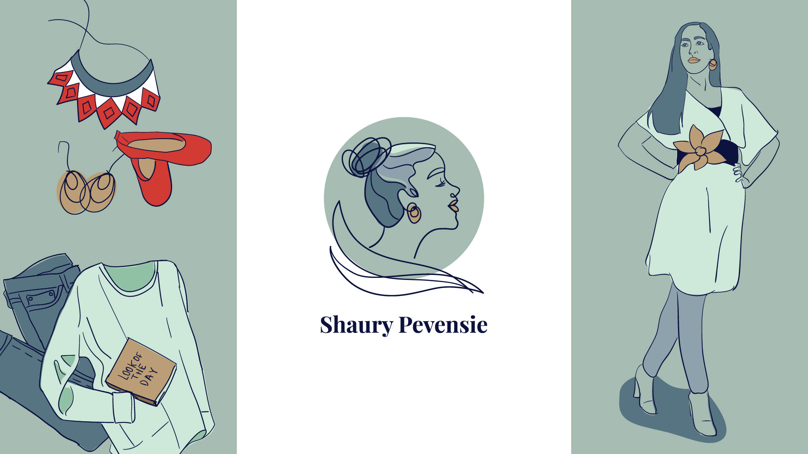
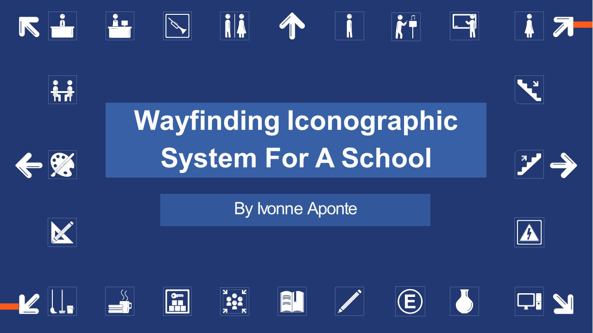
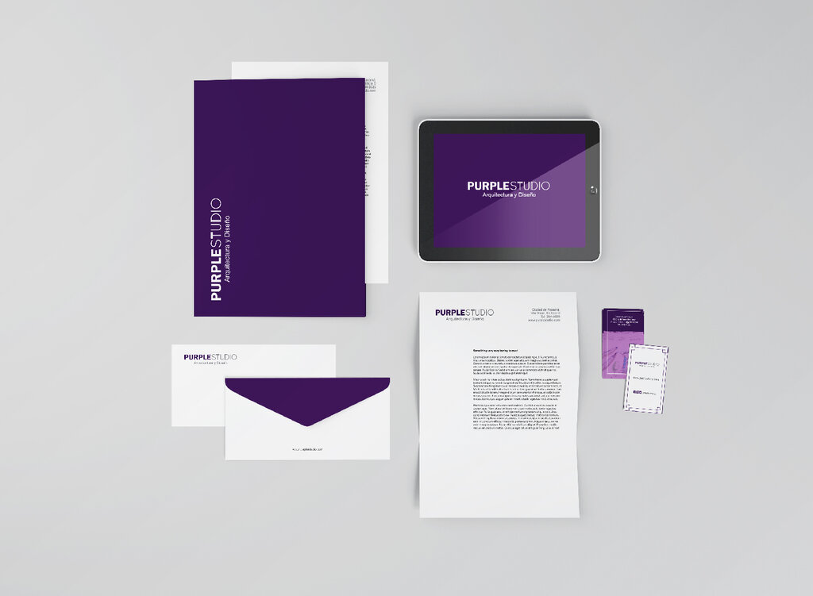

PORTFOLIO

Ogden Barber Company
Logo for a small barber studio.
Rita's Cleaning Services
Logo and visual identity assets for a small home cleaning business.

Shaury Pevensie
Logo and visual identity assets for a content creator

High School Wayfinding system proposal
Project proposed for a school in Panama to implement a wayfinding system.

Some Other Work
Purple Studio is a fictional interior design studio, for which I created a basic branding kit.